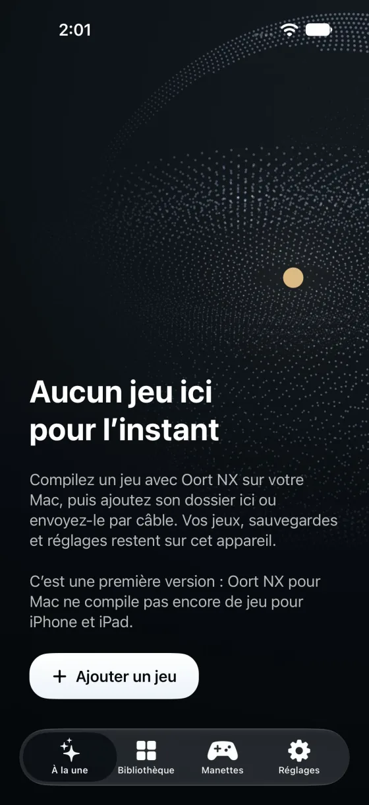

Installer avec un ordinateur (iloader, SideStore)
- 1
Prépare l’iPhone
Il lui faut un code et le Wi-Fi. Installe LocalDevVPN depuis l’App Store et connecte-le : préparation SideStore.
Documentation d’un autre projet, pas essayé : D’où ça vient
Capture à venir
LocalDevVPN connecté.
- 2
Installe iloader
Prends-le seulement sur iloader.app ou son dépôt GitHub. Sous Windows il faut iTunes ; sous Linux, usbmuxd.
Documentation d’un autre projet, pas essayé : D’où ça vient
Capture à venir
La fenêtre d’iloader.
- 3
Installe SideStore
Branche l’iPhone, ouvre iloader et connecte-toi avec le compte secondaire. Choisis l’appareil, puis Install SideStore (Stable).
Documentation d’un autre projet, pas essayé : D’où ça vient
Capture à venir
iloader, appareil choisi.
- 4
Fais confiance
Sur l’iPhone : Réglages › Général › VPN et gestion de l’appareil, ton compte, puis Faire confiance. Ensuite Confidentialité et sécurité › Mode développeur : l’appareil redémarre.
Documentation d’un autre projet, pas essayé : D’où ça vient
Capture à venir
Les deux pages des Réglages iOS.
- 5
Termine SideStore
Connecte LocalDevVPN, ouvre SideStore avec le même compte, puis dans My Apps touche 7 DAYS une première fois.
Documentation d’un autre projet, pas essayé : D’où ça vient
Capture à venir
SideStore, onglet My Apps.
- 6
Ajoute Oort NX
Télécharge
Oort-NX-iOS-0.1.0-alpha.1-unsigned.ipasur la page de la version et ajoute-le dans SideStore. Il prend une place sur les trois d’un compte gratuit.Documentation d’un autre projet, pas essayé : D’où ça vient
Capture à venir
SideStore pendant l’ajout de l’IPA.
- 7
Ouvre Oort NX
La première page dit qu’il n’y a pas encore de jeu. C’est normal.
Vérifié avec des jeux inventés : D’où ça vient


Ce qui a été essayé
Jamais essayé par nous. Les étapes viennent des pages officielles, lues le 25 novembre 2026.